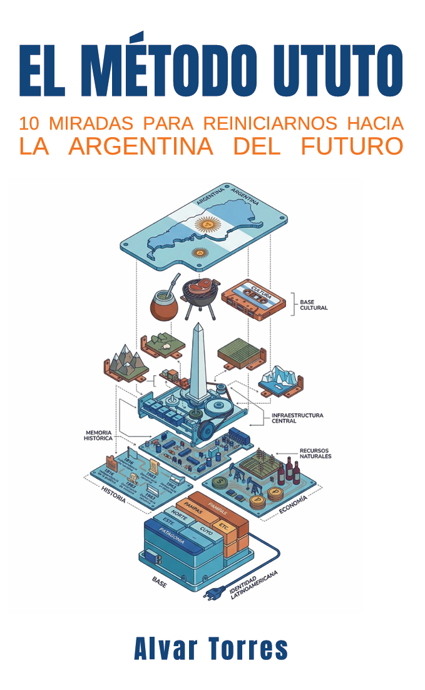

Antes de escribir sobre cómo se arregla un país, escribí sobre cómo se arregla —o se rompe— una vida. El método Ututo no es un libro de política: es la base de todo lo demás.
Se descarga gratis. Completo. Sin registro y sin trampa.
“La misma forma de pensar aplicada a lo personal antes que a lo institucional.”